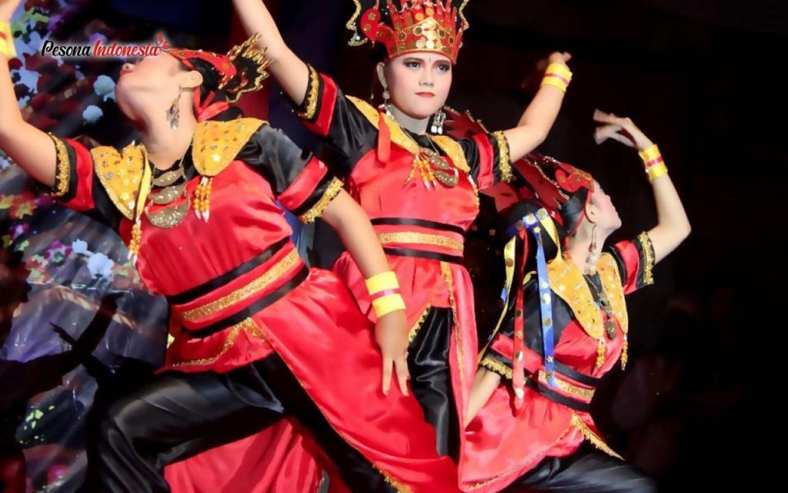
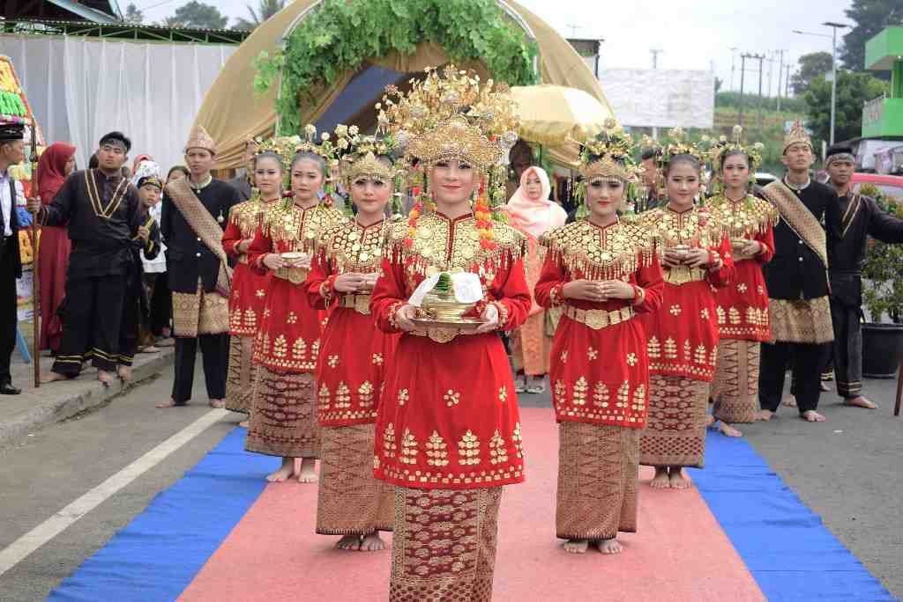
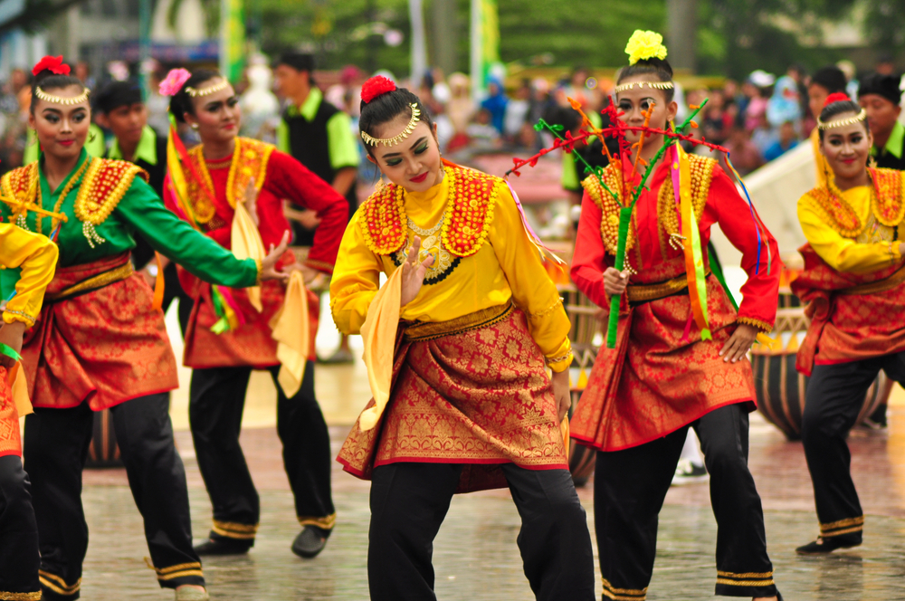
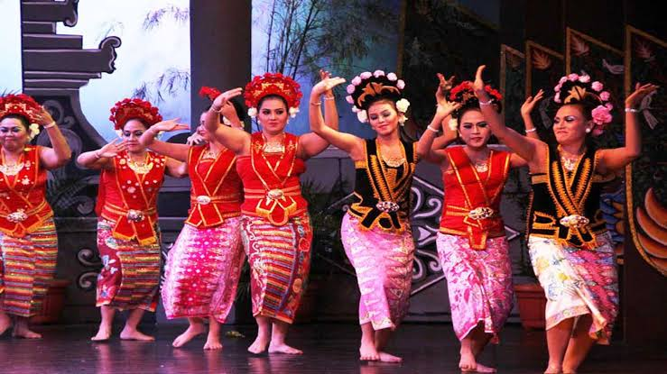
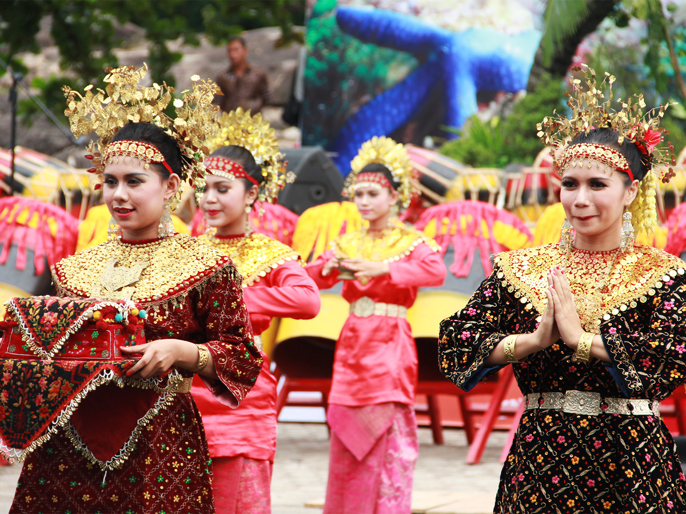
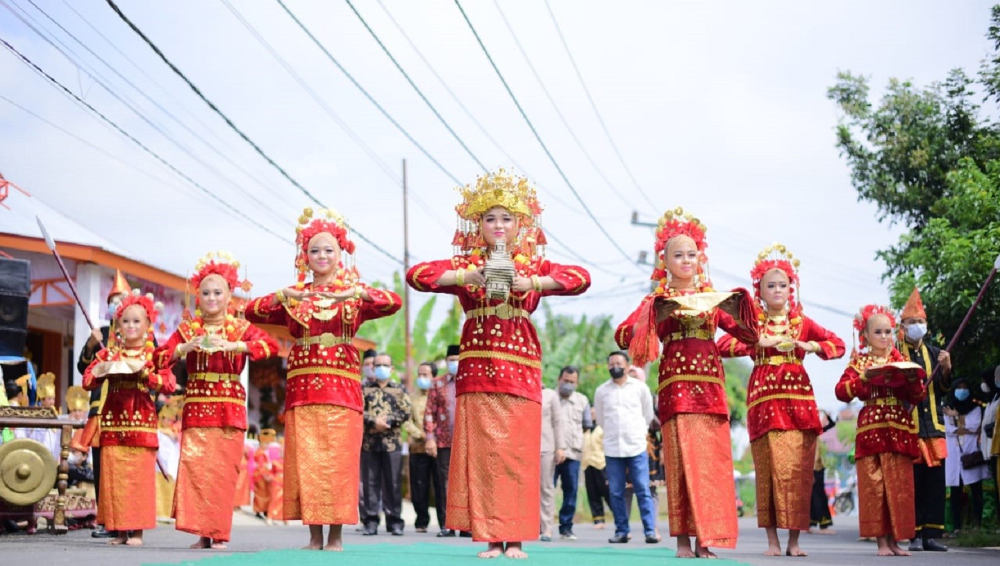

Tarian Adat
Tarian adat Bengkulu adalah bagian penting dari kekayaan budaya daerah yang menggambarkan nilai-nilai tradisional, keramahtamahan, dan filosofi hidup masyarakat setempat. Tarian-tarian ini sering ditampilkan dalam upacara adat, perayaan, dan penyambutan tamu sebagai bentuk penghormatan serta ungkapan rasa syukur. Dengan gerakan yang anggun dan penuh makna, tarian adat Bengkulu, seperti Tari Andun, Tari Kejei, dan Tari Tabot, mencerminkan keindahan, semangat persatuan, serta warisan leluhur yang dijaga dan dilestarikan hingga kini.
backBengkulu memiliki beragam tarian adat yang kaya akan nilai budaya dan filosofis, seringkali ditampilkan dalam upacara adat, perayaan, dan acara kebudayaan. Berikut adalah beberapa tarian adat Bengkulu beserta penjelasannya:
1. Tari Andun
Tari Andun adalah tarian khas Bengkulu yang umumnya ditampilkan dalam acara pernikahan sebagai bentuk ungkapan kegembiraan dan rasa syukur. Tarian ini dilakukan oleh pasangan laki-laki dan perempuan yang bergerak berputar mengikuti irama musik tradisional. Tari Andun memiliki makna sebagai simbol persatuan dan kebersamaan dalam kehidupan masyarakat Bengkulu.
2.Tari Kejei
Tari Kejei merupakan tarian adat masyarakat Rejang di Bengkulu. Tarian ini biasanya ditampilkan dalam upacara adat besar, seperti pernikahan atau upacara penyambutan tamu. Tari Kejei diiringi dengan musik tradisional seperti gendang dan redap. Tari ini menggambarkan keceriaan dan rasa hormat masyarakat Rejang terhadap tamu dan leluhur mereka.
3. Tari Tabot
Tari Tabot adalah bagian dari tradisi Tabot, yaitu upacara memperingati peristiwa Asyura untuk mengenang kematian cucu Nabi Muhammad, Hasan dan Husein. Tari ini dimainkan oleh sekelompok orang dengan gerakan yang dinamis, sering diiringi oleh musik gendang dan alat musik tradisional lainnya. Tari Tabot melambangkan semangat perjuangan dan penghormatan terhadap nilai-nilai kepahlawanan.
4. Tari Bidadari Teminang Anak
Tari Bidadari Teminang Anak adalah tarian khas Bengkulu yang terinspirasi dari cerita rakyat setempat tentang kisah para bidadari. Dalam tarian ini, gerakan para penari melambangkan kelembutan, kecantikan, dan kesakralan. Tarian ini biasanya dibawakan oleh sekelompok penari perempuan dengan gerakan yang anggun, dan sering dipertunjukkan dalam acara budaya serta upacara adat.
5.Tari Sekapur Sirih
Tari Sekapur Sirih juga dikenal di beberapa daerah di Sumatera, termasuk Bengkulu. Tarian ini dibawakan sebagai bentuk penyambutan tamu atau sebagai tanda penghormatan kepada tamu kehormatan. Tarian ini dibawakan oleh penari perempuan dengan gerakan anggun dan gemulai sambil membawa sirih. Tari Sekapur Sirih mengandung makna penghormatan, keramahan, dan kehangatan dalam menyambut tamu.
6.Tari Pukek
Tari Pukek adalah tarian tradisional yang berasal dari Kabupaten Bengkulu Utara, ditampilkan dalam berbagai upacara adat dan acara perayaan. Gerakan Tari Pukek dinamis dan penuh semangat, mencerminkan kehidupan sehari-hari masyarakat pesisir yang tangguh dan optimis.
Setiap tarian adat Bengkulu memiliki filosofi yang mendalam, mencerminkan kehidupan masyarakat, nilai budaya, dan hubungan manusia dengan alam. Tarian ini sering diiringi oleh musik tradisional seperti gendang, serunai, dan redap, yang memperkuat kesan sakral dan menghibur dari setiap pertunjukan.
Berikut Adalah Contoh Salah Satu Tarian Yaitu Tarian Andun


.jpg)